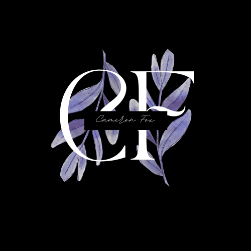

<style>
body {
    margin: 0;
    padding: 0;
    background: linear-gradient(135deg, #1e3c72 0%, #3567be 100%);
}

#root-directory {
    min-height: 100vh;
    display: flex;
    align-items: center;
    justify-content: center;
    padding: 50px 20px;
    background: none;
}

#root-directory .content-container {
    max-width: 600px;
    text-align: center;
    background: rgba(255, 255, 255, 0.1);
    backdrop-filter: blur(20px);
    border-radius: 30px;
    padding: 50px;
    border: 1px solid rgba(255, 255, 255, 0.2);
    box-shadow: 0 8px 32px rgba(0, 0, 0, 0.1);

}

#root-directory h1 {
    font-size: 48px;
    margin-bottom: 20px;
    color: #ffffff;
    text-shadow: 2px 2px 4px rgba(0, 0, 0, 0.2);
}

#root-directory p {
    font-size: 30px;
    margin-bottom: 20px;
    color: #ffffff;
    text-shadow: 2px 2px 4px rgba(0, 0, 0, 0.2);
}

#root-directory nav a {
    display: block;
    padding: 18px 30px;
    background: rgba(255, 255, 255, 0.2);
    backdrop-filter: blur(10px);
    color: #ffffff;
    text-decoration: none;
    border-radius: 15px;
    border: 1px solid rgba(255, 255, 255, 0.3);
    font-size: 1.1rem;
    font-weight: bold;
    transition: all 0.3s ease;
}

#root-directory nav a:hover {
    background: rgba(255, 255, 255, 0.3);
    transform: translateY(-3px);
    box-shadow: 0 8px 20px rgba(0, 0, 0, 0.4);
}

#root-directory ul {
    list-style-type: none;

}
/*Profile Image Editor */ 
.profile-image {
    width: 150px;
    height: 150px;
    border-radius: 50%; /* Makes it circular */
    object-fit: cover;
    object-position: center; /* Centers the crop */
    margin-bottom: 30px;
    border: 4px solid rgba(255, 255, 255, 0.3);
    box-shadow: 0 8px 20px rgba(0, 0, 0, 0.3);
    transition: transform 0.3s ease;
     image-rendering: -webkit-optimize-contrast; /* For Safari */
    image-rendering: crisp-edges; /* For other browsers */
    -webkit-backface-visibility: hidden; /* Prevents blur on transform */
    backface-visibility: hidden;
    z-index: 10; /* Brings image above the blur layer */
}

.profile-image:hover {
    transform: scale(1.05);
    border-color: rgba(255, 255, 255, 0.5);
}

/* Large screens (desktops, 1200px to 1919px) */
@media (min-width: 1200px) and (max-width: 1919px) {
    #root-directory h1 {
        font-size: 60px;
    }
    
    #root-directory p {
        font-size: 28px;
    }
    
    #root-directory nav a {
        padding: 18px 35px;
        font-size: 24px;
    }
       .profile-image {
        width: 120px;
        height: 120px;
    }
}

/* Medium screens (tablets landscape, 992px to 1199px) */
@media (min-width: 992px) and (max-width: 1199px) {
    #root-directory h1 {
        font-size: 55px;
    }
    
    #root-directory p {
        font-size: 24px;
    }
    
    #root-directory nav a {
        padding: 16px 30px;
        font-size: 22px;
    }
       .profile-image {
        width: 120px;
        height: 120px;
    }
}

/* Small tablets (768px to 991px) */
@media (min-width: 768px) and (max-width: 991px) {
    #root-directory h1 {
        font-size: 100px;
    }
    
    #root-directory p {
        font-size: 50px;
    }
    
    #root-directory nav a {
        padding: 14px 25px;
        margin-top: 50px;
        font-size: 50px;
    }
       .profile-image {
        width: 200px;
        height: 200px;
    }
}
/* Mobile landscape / small tablets (576px to 767px) */
@media (min-width: 576px) and (max-width: 767px) {
    #root-directory h1 {
        font-size: 45px;  /* Changed from 100px */
    }
    
    #root-directory p {
        font-size: 20px;  /* Changed from 40px */
    }
    
    #root-directory nav a {
        padding: 12px 20px;  /* Changed from 30px 45px */
        font-size: 18px;  /* Changed from 30px */
    }
}

/* Mobile portrait (up to 575px) */
@media (max-width: 575px) {
    #root-directory h1 {
        font-size: 32px;  /* Changed from 60px */
    }
    
    #root-directory p {
        font-size: 18px;  /* Changed from 30px */
    }
    
    #root-directory nav a {
        padding: 12px 20px;  /* Changed from 30px 45px */
        font-size: 16px;  /* Changed from 25px */
    }
}

/* Extra small phones (up to 375px) */
@media (max-width: 375px) {
    #root-directory h1 {
        font-size: 28px;  /* Changed from 100px */
    }
    
    #root-directory p {
        font-size: 16px;  /* Changed from 40px */
    }
    
    #root-directory nav a {
        padding: 10px 15px;  /* Changed from 30px 45px */
        font-size: 14px;  /* Changed from 40px */
    }
        .profile-image {
        width: 100px;
        height: 100px;
    }
}
</style>


<section id="root-directory">
    <div class="content-container">
      
      <h1>Welcome to Cameron Fox's Links!</h1>
      <p>Find my website, projects, and professional profiles below.</p>
      <nav>
        <ul>
          <li><a href="http://cameronfox.me">My Website</a></li>
          <li><a href="https://www.linkedin.com/in/cameron-fox-296965319/">LinkedIn</a></li>
          <li><a href="https://github.com/CameronFox01">GitHub</a></li>
        </ul>
      </nav>
    </div>
  </section>

<script>
    window.addEventListener('resize', function() {
        console.log('Screen width:', window.innerWidth);
    });
    console.log('Current width:', window.innerWidth);
</script>
  